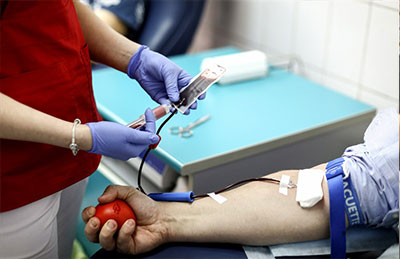
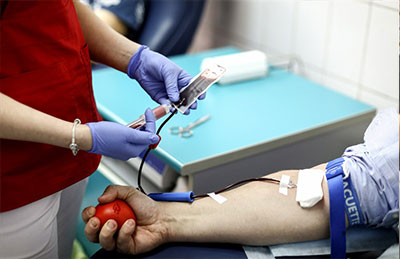
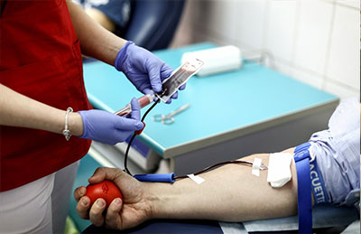

Images

 

Blood donation is a voluntary procedure that can help save the lives of others. There are several types of blood donation, which help meet different medical needs.
This is the most common type of blood donation, during which you donate about a pint of whole blood. The blood is then separated into its components — red cells, plasma, platelets.
రక్తదానం అనేది ఇతరుల ప్రాణాలను రక్షించడంలో సహాయపడే స్వచ్ఛంద ప్రక్రియ. రక్తంలో అనేక రకాలు ఉన్నాయి విరాళం, ఇది వివిధ వైద్య అవసరాలను తీర్చడంలో సహాయపడుతుంది. రక్తదానంలో ఇది అత్యంత సాధారణ రకం, ఈ సమయంలో మీరు ఒక పింట్ మొత్తం రక్తాన్ని దానం చేస్తారు. అప్పుడు రక్తం దాని భాగాలు ఎర్ర కణాలు, ప్లాస్మా, ప్లేట్లెట్లుగా విభజించబడింది.


This blood donor registration form template is totally free and might help you to make people realized that five minutes of their time + 350 ml. of your blood =One life saved.

You can give blood if you are: Healthy person. Weigh between 50kg and 160kg. Men can give blood every three months and women can give blood every four months. Know more There is no restriction on anyone


The voluntary donation process is quick and easy. You can donate at a community blood center or mobile local drive. You will be asked to complete a confidential medical history that includes questions about behaviors known to carry a higher risk of bloodborne infections

A happier, longer life. One blood donation can save up to three lives, according to DeSimone. People usually donate because it feels good to help others, and altruism and volunteering have been linked to positive health outcomes, including a lower risk for depression and greater longevity
Some people may feel nauseous, lightheaded, or dizzy after donating blood. If this happens, it should only last a few minutes. You can lie down with your feet up at the until you feel better. You may also experience some bleeding at the site of the needle.

Blood is essential to help patients survive surgeries, cancer treatment, chronic illnesses, and traumatic injuries. This lifesaving care starts with one person making a generous donation. The need for blood is constant. But only about 3% of age-eligible people donate blood yearly.

To donate blood, you should be in good health, at least 17 years old, and not have an active blood infection. You will be asked questions about your health and travel history before you donate blood. Your blood will also be tested to make sure it's safe for donation.